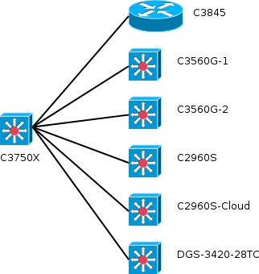

Use screen, Minicom or another terminal to configure Catalyst 3550 as following.
Define Virtual Local Area Network (VLAN)
C3550#conf t
C3550(config)#vlan 10
C3550(config-vlan)#name Management
C3550(config-vlan)#vlan 50
C3550(config-vlan)#name VLan50
C3550(config-vlan)#vlan 60
C3550(config-vlan)#name VLan60
C3550(config-vlan)#interface range fastEthernet 0/1-12
C3550(config-if-range)#description enable-vlan50
C3550(config-if-range)#switchport access vlan 50
C3550(config-if-range)#switchport mode access
C3550(config-if-range)#interface range fastEthernet 0/13-24
C3550(config-if-range)#description enable-vlan60
C3550(config-if-range)#switchport access vlan 60
C3550(config-if-range)#switchport mode access
C3550(config-if-range)#end
C3550#show vlan
VLAN Name Status Ports
---- -------------------------------- --------- -------------------------------
1 default active Gi0/1
10 Management active
50 VLan50 active Fa0/1, Fa0/2, Fa0/3, Fa0/4, Fa0/5, Fa0/6, Fa0/7, Fa0/8, Fa0/9
Fa0/10, Fa0/11, Fa0/12
60 VLan60 active Fa0/13, Fa0/14, Fa0/15, Fa0/16, Fa0/17, Fa0/18, Fa0/19, Fa0/20
Fa0/21, Fa0/22, Fa0/23, Fa0/24
1002 fddi-default act/unsup
1003 token-ring-default act/unsup
1004 fddinet-default act/unsup
1005 trnet-default act/unsup
VLAN Type SAID MTU Parent RingNo BridgeNo Stp BrdgMode Trans1 Trans2
---- ----- ---------- ----- ------ ------ -------- ---- -------- ------ ------
1 enet 100001 1500 - - - - - 0 0
10 enet 100010 1500 - - - - - 0 0
50 enet 100050 1500 - - - - - 0 0
60 enet 100060 1500 - - - - - 0 0
1002 fddi 101002 1500 - - - - - 0 0
1003 tr 101003 1500 - - - - srb 0 0
1004 fdnet 101004 1500 - - - ieee - 0 0
1005 trnet 101005 1500 - - - ibm - 0 0
Remote SPAN VLANs
------------------------------------------------------------------------------
Primary Secondary Type Ports
------- --------- ----------------- ------------------------------------------
Set 802.1q trunk mode on the port you want to connect to VyOS or Openvswitch
C3550#conf t
C3550(config)#interface GigabitEthernet0/2
C3550(config-if)#description Connect to VyOS or Openvswitch
C3550(config-if)#switchport trunk encapsulation dot1q
C3550(config-if)#switchport mode trunk
C3550#sh run
interface GigabitEthernet0/2
switchport trunk encapsulation dot1q
switchport mode trunk
Setup interface vlan ip address (optional)
C3550#conf t
C3550(config-if)#interface vlan 10
C3550(config-if)#description management
C3550(config-if)#ip address 192.168.0.2 255.255.255.0
C3550(config-if)#interface Vlan50
C3550(config-if)#description VLan 50
C3550(config-if)#ip address 192.168.50.254 255.255.255.0
C3550(config-if)#interface Vlan60
C3550(config-if)#description VLan 60
C3550(config-if)#end
C3550#sh run
interface Vlan10
description management
ip address 192.168.0.2 255.255.255.0
!
interface Vlan50
description VLan 50
ip address 192.168.50.254 255.255.255.0
!
interface Vlan60
description VLan 60
no ip address
!
vyos@vyos$ conf
vyos@vyos# set interfaces ethernet eth0 description WAN
vyos@vyos# set interfaces ethernet eth0 address 140.120.16.17/28
vyos@vyos# set interfaces ethernet eth0 address 140.120.16.18/28
vyos@vyos# set interfaces ethernet eth1 description LAN
vyos@vyos# set interfaces ethernet eth1 address 192.168.180.253/24
vyos@vyos# set interfaces ethernet eth1 vif 10 description Management
vyos@vyos# set interfaces ethernet eth1 vif 10 address 192.168.0.1/24
vyos@vyos# set interfaces ethernet eth1 vif 50 description VLan50
vyos@vyos# set interfaces ethernet eth1 vif 50 address 192.168.50.1/24
vyos@vyos# set interfaces ethernet eth1 vif 60 description VLan60
vyos@vyos# set interfaces ethernet eth1 vif 60 address 192.168.60.1/24
vyos@vyos# show interfaces
ethernet eth0 {
address 140.120.16.17/28
address 140.120.16.18/28
description WAN
hw-id 50:e5:49:aa:aa:00
}
ethernet eth1 {
address 192.168.180.253/24
description LAN
hw-id 50:e5:49:aa:aa:01
vif 10 {
address 192.168.0.1/24
description Management
}
vif 50 {
address 192.168.50.1/24
description VLan50
}
vif 60 {
address 192.168.60.1/24
description VLan60
}
}
loopback lo {
}
vyos@vyos# set nat source rule 50 description VLan50toWAN
vyos@vyos# set nat source rule 50 outbound-interface eth0
vyos@vyos# set nat source rule 50 source address 192.168.50.0/24
vyos@vyos# set nat source rule 50 translation address 140.120.16.17
vyos@vyos# set nat source rule 60 description VLan60toWAN
vyos@vyos# set nat source rule 60 outbound-interface eth0
vyos@vyos# set nat source rule 60 source address 192.168.60.0/24
vyos@vyos# set nat source rule 60 translation address 140.120.16.18
vyos@vyos# show nat
source {
rule 50 {
description VLan50toWAN
outbound-interface eth0
source {
address 192.168.50.0/24
}
translation {
address 140.120.16.17
}
}
rule 60 {
description VLan60toWAN
outbound-interface eth0
source {
address 192.168.60.0/24
}
translation {
address 140.120.16.18
}
}
}
sudo ovs-vsctl add-br brLAN #sudo ovs-vsctl add-port brLAN eth0 trunks=10,50,60 sudo ovs-vsctl add-port brLAN eth0 sudo ovs-vsctl add-port brLAN vlan10 tag=10 -- set interface vlan10 type=internal sudo ovs-vsctl add-port brLAN vlan50 tag=50 -- set interface vlan50 type=internal sudo ovs-vsctl add-port brLAN vlan60 tag=60 -- set interface vlan60 type=internal sudo ifconfig vlan10 192.168.0.1 netmask 255.255.255.0 up sudo ifconfig vlan50 192.168.50.1 netmask 255.255.255.0 up sudo ifconfig vlan60 192.168.60.1 netmask 255.255.255.0 up
sudo sysctl net.ipv4.ip_forward=1 sudo iptables -t nat -A POSTROUTING -o brWAN -s 192.168.50.0/24 -j SNAT --to 140.120.15.180 sudo iptables -t nat -A POSTROUTING -o brWAN -s 192.168.60.0/24 -j MASQUERADE
CS topology original
CS topology 201409